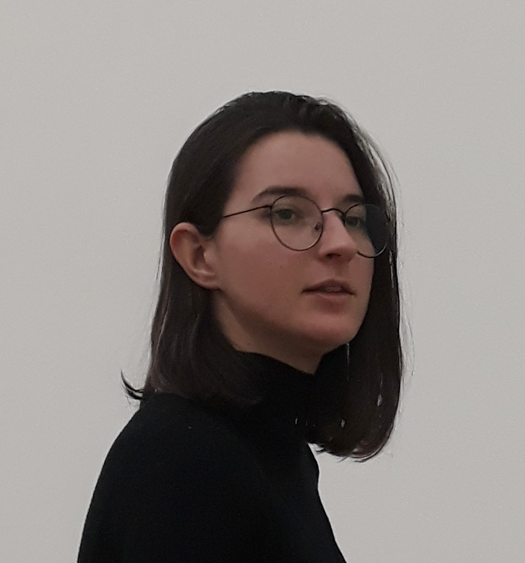

Anabel López
Web & UX/UI Designer | Front-end

Hola...
I'm a multidisciplinary designer specializing in Web design, UX/UI design and front-end developer. My curiosity
and passion for art and design set me on a journey to design a sustainable, innovative, and inclusive place.
That's why I oriented my studies to design, in an integral way: graphic design, interior design, product design,
and fashion design. Finally, I specialized in the most innovative and people-oriented design in its globality,
Web, and UX/UI design.
Work experience
- 2023. Graphic and web designer
Talentum Digital. Digital Marketing Agency.
- Designing web pages with interactive elements with HTML, CSS, Wordpress
- Corporate work, such as the creation of logos and branding
brand manuals with Adobe Illustrator and Indesign.
- Development of strategy and creation of creativities
for rrss for various brands.
- 2023. Web and App User Tester
UserTesting.
- Testing the usability and providing feedback on a website or mobile app.
- 2022. Front-end Developer.
Own Projects.
- Designing web pages with interactive elements with HTML, CSS, and JavaScript.
- Development of interactive games with HTML, CSS, and JavaScript
- 2022. Youth Project Coordinator
Museum Dos de Mayo (CA2M).
- Selection of the dynamics and implementation of artistic workshops.
- 2021. Facilitator in the Youth Programme.
Museum Dos de Mayo (CA2M).
- Accompaniment with various artists in the realization of art workshops with young people.
- 2020. Digital Pattern Maker.
Sole Alonso. Wedding and party dresses boutique.
- Creation of garments in Lectra Modaris, Genma, and Marka software, and then cutting of the garments.
- 2019. Order of a catalogue of school material products.
Distributor Mena Suministros, S.L.
- Layout and illustrations with Adobe Illustrator and Adobe Indesign.
Education
- 2022. Full Stack Web Programming Course. 260h. Your Digital Career Programme.
Adecco y Red.es
Financed by the European Social Fund (ESF). Knowledge acquired:
- Web development with HTML and CSS.
- Web page programming with JavaScript.
- ECMAScript 6, ESLint, JSON.
- DOM, JQuery.
- 2015-2019. Bachelor's Degree in Integral Design and Image Management.
Rey Juan Carlos University (URJC)
- Graphic design and Web design.
- Product design.
- Interior design.
- Personal and corporate branding.
- 2021-2022. Erasmus+ in the Department of Design of the Faculty of Textile Engineering.
Technical University of Liberec.(Czech Republic)
- Creation and conception of the fabric.
- Design, prototyping, and final creation of a dress.
- 2019-2021. Higher Degree in Pattern Making and Fashion.
Fuenllana Institute of Technology.
- Garment design and pattern making.
- Cutting, sewing, and ironing garments.
Skills
- Creativity and Innovation
- Empathy
- Teamwork
- Motivation and ability to learn
- _Initiative, pro-activity, and problem-solving
My hard skills
- Microsoft Office (Advanced).
- Adobe Suite (Advanced): Illustrator, Photoshop, Indesign, Animate.
- Prototyping (Intermediate): Figma, Sketch.
- 3D software and CNC machines: AutoCAD (Intermediate), Rhinoceros 3D (Advanced) y Ultimaker Cura.
- Programming languages (Advanced). HTML5, CSS, JavaScript
Hobbies
Contact details